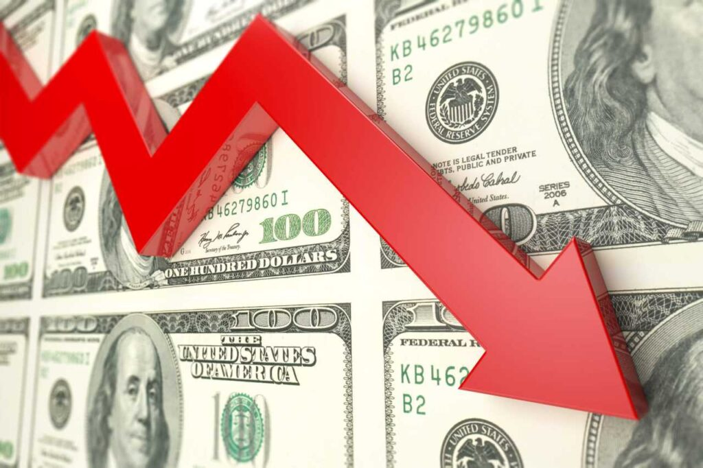

Bem-vindo ao seu site número 1 de notícias!
A fumaça que cobre o país vem, principalmente, de onze estados e do Distrito Federal (DF), de acordo com dados do Instituto Nacional de Pesquisas Espaciais (Inpe). O mapa do fogo mostra que, nestas unidades da federação, o total de focos de incêndio mais que dobrou entre 1º de janeiro e 10 de setembro, na comparação com o mesmo período do ano passado.
O fogo é usado não só para o desmatamento, mas nos processos agropecuários, como limpeza e renovação de pastos. Todos os anos, de julho a agosto, o país enfrenta a temporada do fogo, principalmente na Amazônia, o que castiga quem mora na região, que fica sufocada com a fumaça.
No entanto, este ano, a situação é diferente. Hoje o Brasil vive uma seca nunca antes vista em sua história recente, e o fogo mais que dobrou em quase metade dos estados do país, espalhando a fumaça. No Sudeste, por exemplo, todos os estados mais do que dobraram os índices. (Entenda mais abaixo)
O g1 analisou dados e ouviu especialistas que explicam de onde vem a fumaça e quais as causas das crises dos incêndios. Veja abaixo um resumo da situação atual:
Os principais indicadores do mercado doméstico fecharam no campo positivo nesta sexta-feira (13), com bom humor global em meio ao clima de expectativa para as decisões de política monetária nos Estados Unidos na próxima semana.
Na cena doméstica, a pauta também é juros, mas com apostas na direção de alta. Os argumentos foram reforçados após o Índice de Atividade Econômica do Banco Central (IBC-Br) mostrar queda abaixo do esperado, indicando forte aquecimento das atividades.
O Ibovespa fechou o dia com avanço de 0,64%, aos 134.881 pontos, em linha com valorizações em Wall Street e nas principais praças da Europa.
O resultado deu impulso para a bolsa brasileira acumular alta de 0,22% na semana.
A expectativa de juros em queda nos EUA abriu mais espaço para a tomada de risco, impactando na queda do dólar no Brasil e em outros mercados globais.
A divisa norte-americana encerrou a sessão com perda de 0,89%, negociada a R$ 5,567. Na semana, o dólar cedeu 0,39% ante o par brasileiro.
Texto do segundo artigo. Esta é uma outra área para colocar informações.